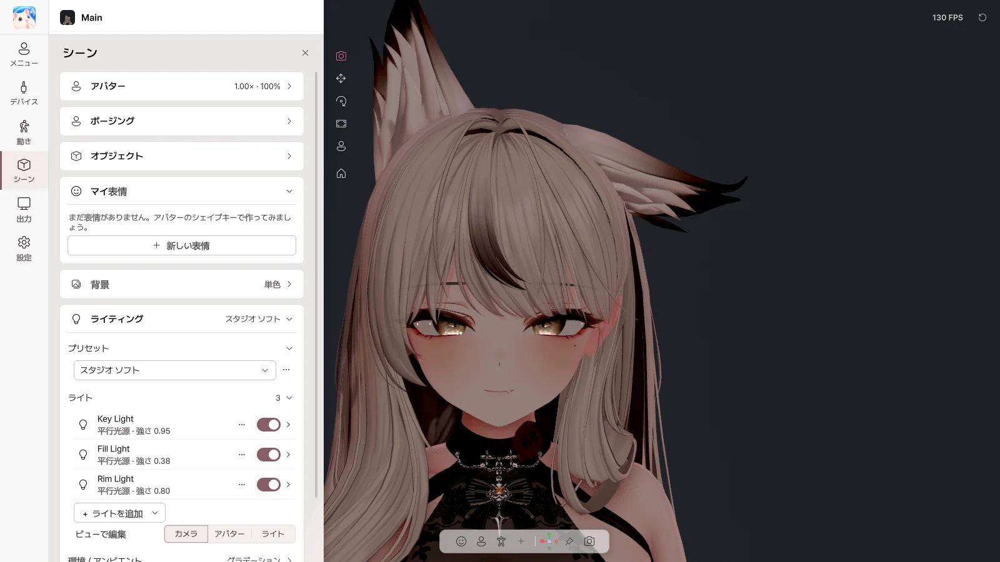

8. シーン#
シーン ページでは、背景・ライティング・エフェクトを設定します。ポージング・オブジェクト・マイ表情は 11 章をご覧ください。

アバター#
| 項目 | 内容 |
|---|---|
| 明るさ | アバター全体の明るさ |
| サイズ | アバターのサイズ |
| 中央に戻す | アバターを中央に |
背景#
| 選択肢 | 用途 |
|---|---|
| 単色 | 好きな色の背景 |
| グリーン / ブルー | クロマキー（OBS のクロマキーフィルター） |
| 透明 | Spout2 で透明背景を送る（ウィンドウでは黒く表示） |
| 画像 | PNG / JPG の画像背景 |
ライティング#
プリセット#
| プリセット | 雰囲気 |
|---|---|
| スポットライト | 顔を照らすステージ照明（標準） |
| カメラライト | カメラ側から照らすシンプルな照明 |
| スタジオ ソフト / スタジオ ブライト | やわらかい / 明るいスタジオ照明 |
| フェイス フォーカス | 顔に集中 |
| フラット VTuber | 影のないフラットな照明 |
| ウォームトーン / クールトーン | 暖かい / 冷たい色味 |
| ドラマチック | 強いサイドライト |
| シーン照明 | アバターを書き出した Unity シーンの照明 |
⋯ メニュー：新しいプリセットとして保存 · 名前を変更 · 今のライティングで更新 · 複製 · 削除 · ライティングをリセット
ライト#
| 項目 | 内容 |
|---|---|
| ライトのスイッチ | オン / オフ |
| 強さ · 色 · 色温度 | 明るさと色 |
| 位置 · 向き · ターゲット | どこからどこを照らすか |
| 影 · 範囲 | 影、光が届く範囲 |
| + ライトを追加 | フェイスライト · フィルライト · リムライト · 平行光源 · ポイント · スポット |
| ビューで編集 | ビュー上でライトを直接動かす |
環境 / アンビエント#
全方向から届く光の明るさと色を設定します：シーンの空 / グラデーション / 単色
エフェクト#
| エフェクト | 内容 |
|---|---|
| ポストプロセス | エフェクト全体をオン / オフ |
| アンチエイリアス | 輪郭のギザギザを減らす |
| ブルーム | 光のにじみ |
| カラーグレーディング | 露出・コントラスト・彩度・色温度 |
| ビネット | 周辺を暗くする |
| フィルムグレイン | フィルムの質感 |
| 色収差 | 周辺の色のにじみ |
| 被写界深度 | 背景ぼかし（顔に自動でピント） |
| モーションブラー | 動きの残像 |
シェーダー#
アバターに使ったシェーダーをそのまま使います。Poiyomi、lilToon などの主要なシェーダーで確認済みです。 AudioLink、ミラー・カメラの検出、Light Volumes は動作しません。